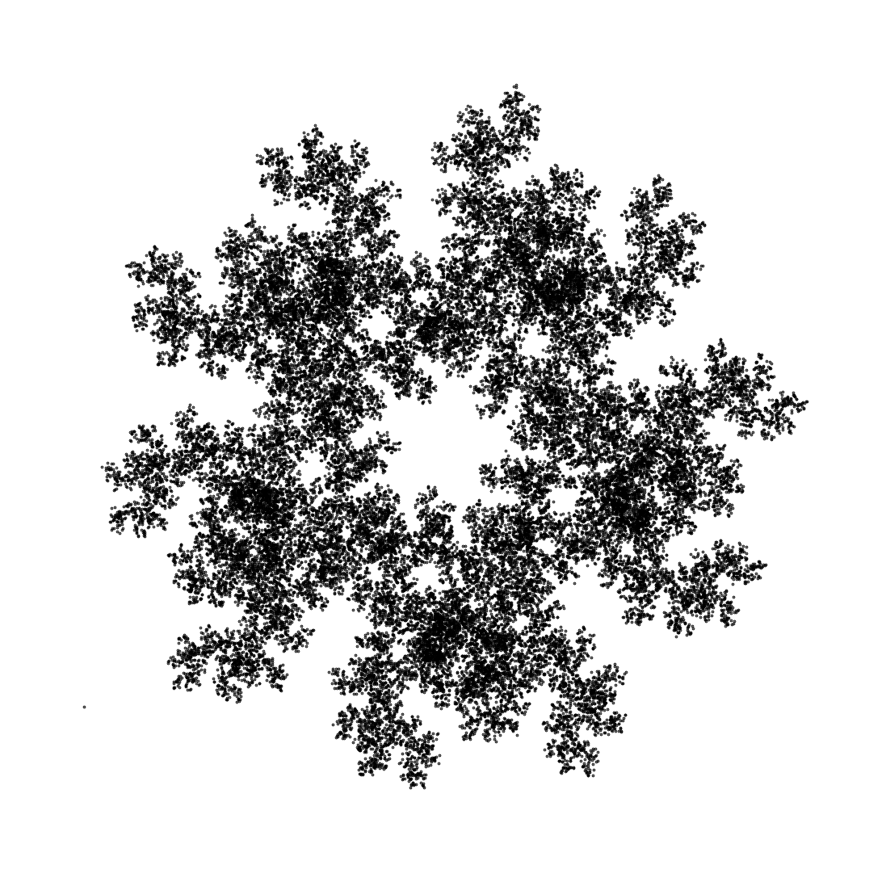
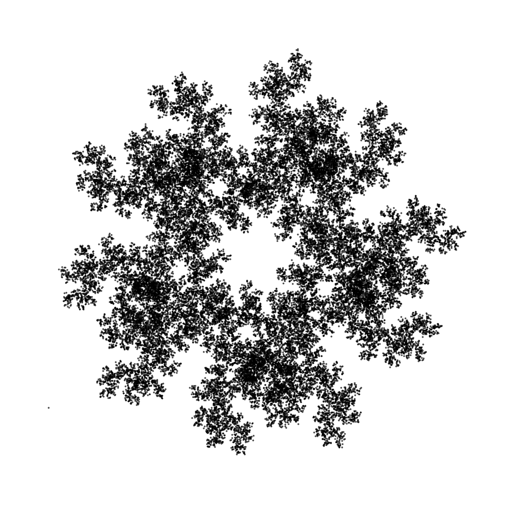

Desmos Interactive Graphs
Order from Chaos
- Pick a random point $x_0$ inside a triangle
- Choose a random vertex of the triangle
- Draw a line between $x_0$ and your chosen vertex
- Label the midpoint of this line $x_1$
- Repeat from step 2, with $x_1$ replacing $x_0$ and so on for $x_2$, $x_3$,...
If you show all the points $x_0, x_1,\dots, x_N$ for some large number $N$, what do you think you will see? Will there be a pattern?
Pick a random point by dragging the point above, and use the slider to change $N$ to see what you get. Scroll down to find out more.

Quite unexpectedly, a regular pattern emerges from these random choices. No matter which point you chose to begin with, nor the order in which you choose the vertices, the result quickly begins to resemble the fractal pattern shown above, called a Sierpiński triangle.
The image above was generated by repeating the process 100000 times. It actually began with a point outside the triangle - indeed, you'll get the same result starting with any point, as long as you continue the process long enough. Why do you think this works?
We can investigate this further! What happens when we use a square instead of a triangle?
Spot any patterns for this one?
No. Me neither. It's just random noise, which is arguably interesting in its own right, but if it's fractals we're after, we just need to tweak the rules a little bit. When choosing the vertices, we'll make sure to never pick the same vertex twice in a row. Have a look at the pattern that this creates...
There's definitely a pattern emerging here, though we might need a finer resolution to see it, so let's use 100000 points again...

These fractals have some really intricate and beatiful structure, once of many examples where regularity can emerge from randomness in mathematics. This method of generating fractals from random iterated functions is called the chaos game.
If you want to see how I created these images and have a play with some other shapes and effects, take a look at my Python code on Google Colab. What other interesting things can you find?
 
